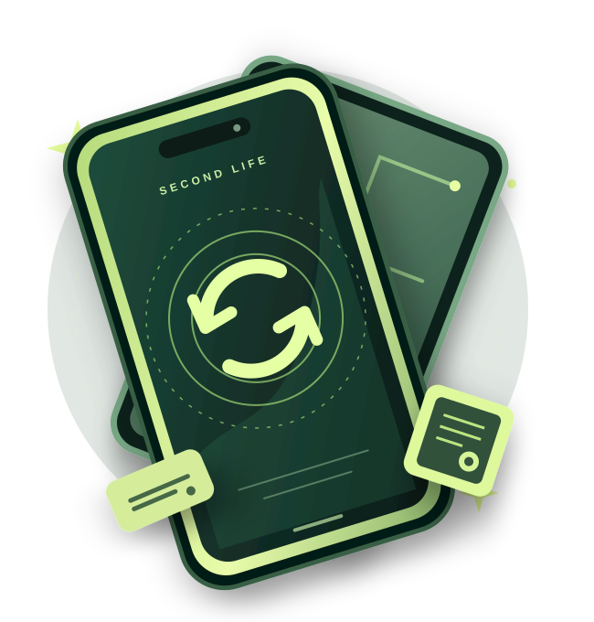

WORLDWIDE E-WASTE GENERATED / 2022
62million
tonnes
tonnes
of electronic waste was generated across the world in one year.
Our devices have a story beyond the screen. Join us as we explore the hidden cost of electronic waste — and what we can do differently.

Technology connects us, but our upgrade culture creates a growing pile of discarded electronics.
SDG 12 encourages us to use resources responsibly and produce less waste. We chose to focus on electronic waste (e-waste): old phones, computers, chargers and other electrical devices.
Our question is simple: What if we stopped treating working technology as disposable?
Explore UN Goal 12When we replace instead of repair, valuable materials may be lost and waste can harm people and the environment.
SOURCE: GLOBAL E-WASTE MONITOR 2024of electronic waste was generated across the world in one year.
of global e-waste was documented as formally collected and recycled.
Twelve moments. Two perspectives. One story about the technology we use and the choices we make.
EXPLORE THE ISSUE
THROUGH OUR EYES
Project preparation: These are original demo illustrations, not the required photographs. Replace them with your own 12 photographs (6 per student) before handing in the project. See gallery-data.js.
Understanding the problem is the first step. Now it is your turn to make a difference.
Four quick questions about the way we use our technology.
Pick the everyday actions you are ready to take. Your progress is saved only in this browser.
Check whether a battery, cable or individual part can be replaced safely by a qualified person.
Donate, sell or repurpose working electronics instead of leaving them in a drawer.
Take electrical waste to an appropriate collection point — not into general household waste.
From spotting a problem to sharing a solution: this is how our project comes together.
Research SDG 12 and choose a specific everyday issue.
Each student takes and edits at least six original photos.
Build the website, write captions and test interactive features.
Publish together using GitHub and present the story to others.
We both contribute to the content, photography and development of this project.
SDG research · homepage · 6 original photos · interactive features
My contribution: I introduce SDG 12, develop the first part of the photo story and work on the interactive elements.
Problem description · gallery conclusion · 6 original photos · interactive features
My contribution: I explain the chosen problem, develop the second part of the photo story and help test the website.
Buying less, caring more and giving things a second life are choices we can all make. What will you do differently?
Start with one action